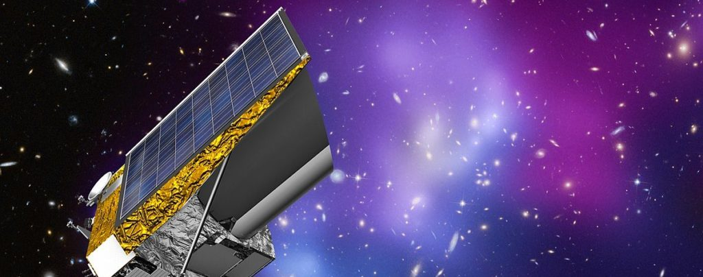

Euclid is a space-mission orchestrated by the European Space Agency, which launched a 1.2m class telescope in July 2023 and is taking high quality imaging of tens of millions of galaxies. The primary science focus is cosmology and dark energy – we want to understand why the Universe is expanding and, more importantly, why this expansion is accelerating.

In Euclid, I lead the Strong Lensing Science Working Group, a team of more than 50 scientists studying the strong gravitational lenses (described here) that Euclid is discovering. Strong lensing is a major focus of Euclid’s first Data Release on 12 November 2026, for which I am coordinating five papers, including one I lead.
I also work on weak gravitational lensing, which is fundamentally the same phenomenon as strong lensing. However, whilst strong lensing concerns itself with individual galaxies which are massively distorted by gravity, weak lensing focuses on the simultaneous study of large samples of galaxies which are fractionally distorted.
To measure weak lensing, galaxy imaging needs to be exquisite. Unfortunately, many effects degrade the quality of Euclid’s imaging over its lifetime. I work on modeling the effect of radiation damage (due to bright emission from the sun) that degrades the Euclid detector electronics over the satellite’s 5 year life-cycle.
Radiation damage causes an increase in the “Charge Transfer Inefficiency” of the CCD detectors, which induces a gradually worsening smearing of the images that Euclid observes. If our goal is to make precise and accurate measurements of galaxy shapes, this smearing could be a major source of systematic error.
My research uses models of CCD detector physics (guided by solid state theory and laboratory experiments) to correct this smearing effect in every image Euclid observes. This is implemented in the software package PyAutoCTI, which I lead development of.
Euclid is expected to discover one hundred thousand strong lenses, and we do not want their images to be degraded before we analyse them with PyAutoLens! Check out the press release I did on Euclid and strong lensing for the 2016 UK National Astronomy Meeting for more information.
I chair the Euclid:UK Coordination Group, which supports UK researchers in maximising the scientific return from Euclid data, and I was previously its computing lead (2023–2025), coordinating the resource calls that secured over 1500 CPU years for the UK community. I hold Euclid Builder status (2022) and was awarded the Euclid STAR Prize in 2019.
PyAutoCTI Links:
GitHub: https://github.com/Jammy2211/PyAutoCTI
readthedocs: https://pyautocti.readthedocs.io/en/latest/
Every Euclid Paper (So Far)
Large collaborations make for long author lists. As a member of the Euclid Consortium, my name appears on every one of the 122 papers below, as of September 2026 and rising quickly. They are listed in full, newest first, partly for completeness and partly because it is quite satisfying to scroll through.
- Euclid: Quick Data Release (Q1) – Optical hotspots in powerful radio galaxies (2026)
- Euclid: Galaxy cluster detection through the weak lensing effect - algorithm assessment and selection (2026)
- Euclid Quick Data Release (Q1) Euclid spectroscopy of quasars. 2. Physical properties from spectral fitting (2026)
- Euclid: Quick Data Release (Q1) – Exploring the detailed visual morphology of galaxies in clusters (2026)
- Euclid. A two-point correlation approach to diagnosing star-related systematics in the Euclid spectroscopic survey (2026)
- Euclid preparation. The shape of halo profiles in ΛCDM and non-standard cosmologies (2026)
- Euclid: Inferring star-formation history via cross-correlations of photometric clustering and shear with the cosmic infrared background (2026)
- Euclid: Calibrating distances from surface brightness fluctuations with Early Release Observations of the Fornax cluster (2026)
- Euclid: Measuring the intrinsic alignment of galaxies around cosmic voids in the Euclid Flagship simulation (2026)
- Euclid Quick Data Release (Q2) – The Euclid Galactic Bulge Survey (2026)
- Euclid Quick Data Release (Q1): The geometry of dark matter halos from extragalactic streams (2026)
- Euclid preparation: Testing multi-field inflation with galaxy power spectrum and bispectrum (2026)
- Euclid preparation. Three-dimensional galaxy clustering in configuration space: Three-point correlation function estimation (2026)
- Euclid preparation. Refining input galaxy shape distributions for shear calibration simulations (2026)
- Euclid preparation. Testing template-fitting models for the multipoles of the two-point clustering of galaxy clusters (2026)
- Euclid Quick Data Release (Q1). AstroVink: A vision transformer approach to find strong gravitational lens systems (2026)
- Euclid: Scaled-up little red dots and other sources with v-shaped spectral energy distributions at z>4 (2026)
- Euclid. Populating a dark universe with galaxies using SciPIC (2026)
- Euclid Quick Data Release (Q1). AgileLens: A scalable CNN-based pipeline for strong gravitational lens identification (2026)
- Euclid preparation. Impact of redshift distribution uncertainties on the joint analysis of photometric galaxy clustering and weak gravitational lensing (2026)
- Euclid preparation. Galaxy power spectrum and bispectrum modelling (2026)
- Euclid Quick Data Release (Q1). The Strong Lensing Discovery Engine F – Bright and low-redshift strong lenses (2026)
- Euclid preparation. Cosmology Likelihood for Observables in Euclid (CLOE). 2. Code implementation (2026)
- Euclid preparation. Simulated galaxy catalogues for non-standard cosmological models (2026)
- Euclid preparation. Review of forecast constraints on dark energy and modified gravity (2025)
- Euclid Quick Data Release (Q1). From simulations to sky: Advancing machine-learning lens detection with real Euclid data (2025)
- Euclid preparation. XCVI. Cosmology Likelihood for Observables in Euclid (CLOE). 3. Inference and Forecasts (2025)
- Euclid preparation XCVII. Cosmology Likelihood for Observables in Euclid (CLOE). 4: Validation and performance (2025)
- Euclid: Methodology for derivation of IPC-corrected conversion gain of nonlinear CMOS APS (2025)
- Euclid preparation. LXXIV. Euclidised observations of Hubble Frontier Fields and CLASH galaxy clusters (2025)
- The revolution in strong lensing discoveries from Euclid (2025)
- Euclid VI. NISP-P optical ghosts (2025)
- Euclid: The potential of slitless infrared spectroscopy: A z=5.4 quasar and new ultracool dwarfs (2025)
- Euclid preparation: The NISP spectroscopy channel, on ground performance and calibration (2025)
- Euclid preparation. Constraining parameterised models of modifications of gravity with the spectroscopic and photometric primary probes (2025)
- Euclid: Early Release Observations of ram-pressure stripping in the Perseus cluster. Detection of parsec scale star formation with in the low surface brightness stripped tails of UGC 2665 and MCG +07-07-070 (2025)
- Euclid preparation. The impact of redshift interlopers on the two-point correlation function analysis (2025)
- Euclid preparation: TBD. Cosmic Dawn Survey: evolution of the galaxy stellar mass function across 0.2<z<6.5 measured over 10 square degrees (2025)
- Euclid preparation. Estimating galaxy physical properties using CatBoost chained regressors with attention (2025)
- Euclid Quick Data Release (Q1). The first Euclid view of Planck galaxy protocluster candidates at cosmic noon (2025)
- Euclid Quick Data Release (Q1). First detections from the galaxy cluster workflow (2025)
- Euclid Quick Data Release (Q1) The Strong Lensing Discovery Engine B – Early strong lens candidates from visual inspection of high velocity dispersion galaxies (2025)
- Euclid Quick Data Release (Q1). The first catalogue of strong-lensing galaxy clusters (2025)
- Euclid Quick Data Release (Q1). The Strong Lensing Discovery Engine D – Double-source-plane lens candidates (2025)
- Euclid Quick Data Release (Q1) First study of red quasars selection (2025)
- Euclid Quick Data Release (Q1). Exploring galaxy morphology across cosmic time through Sersic fits (2025)
- Euclid Quick Data Release (Q1). Optical and near-infrared identification and classification of point-like X-ray selected sources (2025)
- Euclid Quick Data Release (Q1). First Euclid statistical study of galaxy mergers and their connection to active galactic nuclei (2025)
- Euclid Quick Data Release (Q1): VIS processing and data products (2025)
- Euclid Quick Data Release (Q1): First visual morphology catalogue (2025)
- Euclid Quick Data Release (Q1). The Strong Lensing Discovery Engine C: Finding lenses with machine learning (2025)
- Euclid Quick Data Release (Q1). Photometric redshifts and physical properties of galaxies through the PHZ processing function (2025)
- Euclid Quick Data Release (Q1). The role of cosmic connectivity in shaping galaxy clusters (2025)
- Euclid: Quick Data Release (Q1) – A census of dwarf galaxies across a range of distances and environments (2025)
- Euclid Quick Data Release (Q1). Galaxy shapes and alignments in the cosmic web (2025)
- Euclid Quick Data Release (Q1). The Strong Lensing Discovery Engine E – Ensemble classification of strong gravitational lenses: lessons for Data Release 1 (2025)
- Euclid Quick Data Release (Q1). The active galaxies of Euclid (2025)
- Euclid Quick Data Release (Q1). LEMON – Lens Modelling with Neural networks. Automated and fast modelling of Euclid gravitational lenses with a singular isothermal ellipsoid mass profile (2025)
- Euclid Quick Data Release (Q1): The evolution of the passive-density and morphology-density relations between z = 0.25 and z = 1 (2025)
- Euclid Quick Data Release (Q1) Exploring galaxy properties with a multi-modal foundation model (2025)
- Euclid Quick Data Release (Q1): The Strong Lensing Discovery Engine A – System overview and lens catalogue (2025)
- Euclid Quick Data Release (Q1). NIR processing and data products (2025)
- Euclid Quick Data Release (Q1) – Characteristics and limitations of the spectroscopic measurements (2025)
- Euclid preparation. Spatially resolved stellar populations of local galaxies with Euclid: a proof of concept using synthetic images with the TNG50 simulation (2025)
- Euclid: Quick Data Release (Q1) – Photometric studies of known transients (2025)
- Euclid Quick Data Release (Q1). Combined Euclid and Spitzer galaxy density catalogues at z > 1.3 and detection of significant Euclid passive galaxy overdensities in Spitzer overdense regions (2025)
- Euclid Quick Data Release (Q1). An investigation of optically faint, red objects in the Euclid Deep Fields (2025)
- Euclid Quick Data Release (Q1). First Euclid statistical study of the active galactic nuclei contribution fraction (2025)
- Euclid Quick Data Release (Q1) – Data release overview (2025)
- Euclid Quick Data Release (Q1). Extending the quest for little red dots to z<4 (2025)
- Euclid Quick Data Release (Q1). A probabilistic classification of quenched galaxies (2025)
- Euclid Quick Data Release (Q1). A first view of the star-forming main sequence in the Euclid Deep Fields (2025)
- Euclid Quick Data Release (Q1), A first look at the fraction of bars in massive galaxies at z < 1 (2025)
- Euclid Quick Data Release (Q1): From images to multiwavelength catalogues: the Euclid MERge Processing Function (2025)
- Euclid Quick Data Release (Q1): From spectrograms to spectra: the SIR spectroscopic Processing Function (2025)
- Euclid: Early Release Observations – The Intracluster Light of Abell 2390 (2025)
- Euclid: Finding strong gravitational lenses in the Early Release Observations using convolutional neural networks (2025)
- Euclid: A complete Einstein ring in NGC 6505 (2025)
- Euclid preparation. LXVIII. Extracting physical parameters from galaxies with machine learning (2025)
- Euclid preparation LX. The use of HST images as input for weak-lensing image simulations (2025)
- Euclid: Field-level inference of primordial non-Gaussianity and cosmic initial conditions (2024)
- Euclid preparation: TBD. The impact of line-of-sight projections on the covariance between galaxy cluster multi-wavelength observable properties – insights from hydrodynamic simulations (2024)
- Euclid: Searches for strong gravitational lenses using convolutional neural nets in Early Release Observations of the Perseus field (2024)
- Euclid: The rb–M∗ relation as a function of redshift. I. The 5 × 109 M⊙ black hole in NGC 1272 (2024)
- Euclid: High-precision imaging astrometry and photometry from Early Release Observations. I. Internal kinematics of NGC 6397 by combining Euclid and Gaia data (2024)
- Euclid preparation: 6x2 pt analysis of Euclid's spectroscopic and photometric data sets (2024)
- Euclid: The Early Release Observations Lens Search Experiment (2024)
- Euclid preparation. The Cosmic Dawn Survey (DAWN) of the Euclid Deep and Auxiliary Fields (2024)
- Euclid Preparation. Cosmic Dawn Survey: Data release 1 multiwavelength catalogues for Euclid Deep Field North and Euclid Deep Field Fornax (2024)
- Euclid and KiDS-1000: Quantifying the impact of source-lens clustering on cosmic shear analyses (2024)
- Euclid preparation. LI. Forecasting the recovery of galaxy physical properties and their relations with template-fitting and machine-learning methods (2024)
- Tracking radiation damage of Euclid VIS detectors after 1 year in space (2024)
- Euclid preparation. Sensitivity to non-standard particle dark matter model (2024)
- Euclid preparation. Observational expectations for redshift z<7 active galactic nuclei in the Euclid Wide and Deep surveys (2024)
- Euclid. II. The VIS Instrument (2024)
- Euclid. IV. The NISP Calibration Unit (2024)
- Euclid: Early Release Observations – Deep anatomy of nearby galaxies (2024)
- Euclid: Early Release Observations – The intracluster light and intracluster globular clusters of the Perseus cluster (2024)
- Euclid preparation. LVIII. Detecting globular clusters in the Euclid survey (2024)
- Euclid preparation. Sensitivity to neutrino parameters (2024)
- Euclid preparation. LIII. LensMC, weak lensing cosmic shear measurement with forward modelling and Markov Chain Monte Carlo sampling (2024)
- Euclid preparation. Improving cosmological constraints using a new multi-tracer method with the spectroscopic and photometric samples (2024)
- Euclid preparation. XXXI. The effect of the variations in photometric passbands on photometric-redshift accuracy (2023)
- Euclid Preparation XXXIII. Characterization of convolutional neural networks for the identification of galaxy-galaxy strong lensing events (2023)
- Euclid: Constraining linearly scale-independent modifications of gravity with the spectroscopic and photometric primary probes (2023)
- Euclid preparation. XXIX. Water ice in spacecraft part I: The physics of ice formation and contamination (2023)
- Euclid preparation. XXVII. A UV-NIR spectral atlas of compact planetary nebulae for wavelength calibration (2023)
- Euclid preparation. XXX. Performance assessment of the NISP Red-Grism through spectroscopic simulations for the Wide and Deep surveys (2023)
- Euclid: Cosmology forecasts from the void-galaxy cross-correlation function with reconstruction (2023)
- Euclid preparation: XXVIII. Modelling of the weak lensing angular power spectrum (2023)
- Euclid preparation. XXXII. Evaluating the weak lensing cluster mass biases using the Three Hundred Project hydrodynamical simulations (2023)
- Euclid Preparation. XXVIII. Forecasts for ten different higher-order weak lensing statistics (2023)
- Euclid preparation: XXII. Selection of Quiescent Galaxies from Mock Photometry using Machine Learning (2022)
- Euclid preparation. XVIII. The NISP photometric system (2022)
- Euclid preparation: XIX. Impact of magnification on photometric galaxy clustering (2021)
- Euclid preparation: XVI. Exploring the ultra low-surface brightness Universe with Euclid/VIS (2021)
- Euclid preparation: I. The Euclid Wide Survey (2021)
- Euclid Preparation: XIV. The Complete Calibration of the Color-Redshift Relation (C3R2) Survey: Data Release 3 (2021)
- Euclid preparation: XV. Forecasting cosmological constraints for the Euclid and CMB joint analysis (2021)
- Euclid preparation: XIII. Forecasts for galaxy morphology with the Euclid Survey using Deep Generative Models (2021)
- Euclid preparation: XII. Optimizing the photometric sample of the Euclid survey for galaxy clustering and galaxy-galaxy lensing analyses (2021)
- Euclid preparation: XI. Mean redshift determination from galaxy redshift probabilities for cosmic shear tomography (2021)
Compiled from arXiv author metadata; each title links to its arXiv entry.